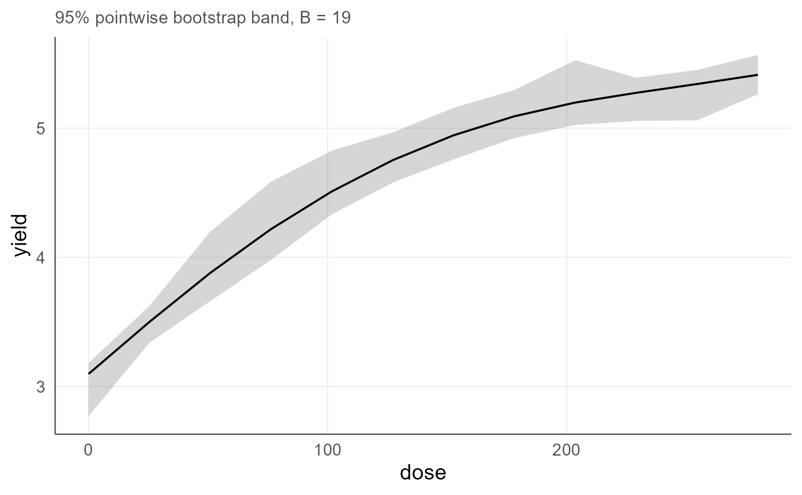

Cluster-aware bootstrap confidence bands for agronomic regression
agri_np_bootstrap.RdRefits the selected regression engine under row or cluster resampling and returns pointwise percentile bands.
Arguments
- object
An
agri_np_reg_fit.- newdata
Prediction grid; generated automatically if omitted.
- predictor
Numeric focal predictor.
- B
Bootstrap replicates.
- level
Interval level.
- seed
Random seed.
- cluster
Optional resampling cluster. The declared block is used by default when available.
- n
Automatic grid size.
- fixed
Values for other covariates.
- parallel
Distribute the replicates over a
futureplan. Defaults toFALSE, and the default should stayFALSEfor small problems: starting workers and shipping the data costs more than it saves below a few hundred replicates. Requires the future.apply package and a plan set by the user, for examplefuture::plan(future::multisession).The result does not depend on it. Each replicate is drawn from its own L'Ecuyer-CMRG substream, so replicate
bis the same object whichever worker computes it and in whatever order, and a run with four cores gives the same interval as a run with one.- target
"curve"resamples the fitted response over a grid;"coefficients"resamples the coefficient vector and is available only for the engines that define one.- band
"pointwise"gives percentile limits at each grid point;"simultaneous"gives a sup-t band that covers the whole curve at the nominal level.- keep_replicates
If
TRUE, the matrix of replicates is stored in the"replicates"attribute, which allows a histogram of a slope, a cloud of fitted curves, or a custom band.
Details
When a block or cluster is supplied, whole clusters are resampled, which preserves the randomization structure of the trial. Large B should be used for final inference.
By default the limits are pointwise: each grid point is covered at the nominal level, but the probability that the whole curve lies inside the band is lower. With band = "simultaneous" a sup-t band is returned, which covers the entire curve at the nominal level and is therefore wider. Report the pointwise band when a statement refers to one nitrogen rate, and the simultaneous band when the statement refers to the shape of the response.
With target = "coefficients" the resampled quantity is the coefficient vector rather than the curve. This is available for theil_sen, siegel and quantile; the other engines have no coefficients to resample and are refused by coef.agri_np_reg_fit. Replicates are aligned by term name, so a replicate whose coefficient vector is reordered or depleted , for example when a bootstrap sample loses one level of a qualitative factor , is counted as a failed refit instead of being read in the original order. Block adjustment terms are excluded from the target: they are nuisance parameters whose meaning changes with every draw of the blocks under cluster resampling, so a block-adjusted fit reports intervals for the scientific coefficients of the declared formula. See agri_np_forest for the corresponding figure.
Value
For target = "curve", a data frame with the prediction grid, the original fitted curve and the bootstrap limits. For target = "coefficients", a data frame with term, estimate, lower and upper. Bootstrap metadata is stored in attributes, and plot() draws the result.
Examples
# B = 19 keeps these examples fast. It is far too small for analysis: use
# B >= 999 for reporting and B >= 4999 for final work whenever feasible.
data(agri_dose)
f <- agri_np_regression(yield ~ dose, agri_dose, method = "smoothing_spline")
# Example 1: resampled uncertainty of the fitted curve
b1 <- agri_np_bootstrap(f, B = 19, n = 30)
head(b1)
#> dose fit lower upper
#> 1 0.000000 3.096659 2.769755 3.181638
#> 2 9.655172 3.250765 3.045854 3.338330
#> 3 19.310345 3.403596 3.234033 3.495303
#> 4 28.965517 3.553867 3.394229 3.704220
#> 5 38.620690 3.700297 3.523608 3.942493
#> 6 48.275862 3.841688 3.631339 4.148371
# Example 2: uncertainty exactly at the rates under discussion
b2 <- agri_np_bootstrap(f, newdata = data.frame(dose = c(80, 160, 240)), B = 19)
b2
#> dose fit lower upper
#> 1 80 4.263777 4.037220 4.629105
#> 2 160 4.991988 4.796493 5.195342
#> 3 240 5.302895 5.009802 5.394004
# The width of each interval, in Mg/ha, is what separates a recommendation
# from a point estimate.
# Example 3: block-aware bootstrap, which resamples whole blocks
if (requireNamespace("mgcv", quietly = TRUE)) {
fb <- agri_np_regression(yield ~ dose, agri_dose, method = "gam", block = block)
head(agri_np_bootstrap(fb, B = 19, n = 20))
# Resampling complete blocks preserves the randomization structure of the
# trial; resampling individual plots would not.
}
#> Warning: factor levels B1 not in original fit
#> Warning: factor levels B1 not in original fit
#> Warning: factor levels B1 not in original fit
#> Warning: factor levels B1 not in original fit
#> Warning: factor levels B1 not in original fit
#> Warning: factor levels B1 not in original fit
#> Warning: factor levels B1 not in original fit
#> Warning: factor levels B1 not in original fit
#> Warning: factor levels B1 not in original fit
#> Warning: factor levels B1 not in original fit
#> Warning: factor levels B1 not in original fit
#> dose block fit lower upper
#> 1 0.00000 B1 2.650496 2.630398 2.659326
#> 2 14.73684 B1 2.932684 2.863870 2.998247
#> 3 29.47368 B1 3.205112 3.103608 3.317160
#> 4 44.21053 B1 3.458055 3.384060 3.557420
#> 5 58.94737 B1 3.684881 3.650532 3.750022
#> 6 73.68421 B1 3.884407 3.766412 3.987865
# Example 4: pointwise against simultaneous. The simultaneous band is wider
# because it must contain the whole curve, not each point separately.
bp <- agri_np_bootstrap(f, B = 19, n = 12, band = "pointwise")
bs <- agri_np_bootstrap(f, B = 19, n = 12, band = "simultaneous")
c(pointwise = mean(bp$upper - bp$lower), simultaneous = mean(bs$upper - bs$lower))
#> pointwise simultaneous
#> 0.4188297 0.7756648
# Example 5: a bootstrap interval for a rank-robust slope
if (requireNamespace("mblm", quietly = TRUE)) {
ts <- agri_np_regression(yield ~ dose, agri_dose, method = "theil_sen")
agri_np_bootstrap(ts, target = "coefficients", B = 19, seed = 1)
}
#> term estimate lower upper
#> 1 (Intercept) 3.382166667 3.267866667 3.762400625
#> 2 dose 0.008008333 0.006450135 0.008966875
# Example 6: keeping the replicates allows a histogram of the slope
if (requireNamespace("mblm", quietly = TRUE)) {
bt <- agri_np_bootstrap(ts, target = "coefficients", B = 19, seed = 1,
keep_replicates = TRUE)
slope <- attr(bt, "replicates")[2, ]
summary(slope)
}
#> Min. 1st Qu. Median Mean 3rd Qu. Max.
#> 0.006267 0.007822 0.007900 0.007939 0.008294 0.009100
# Example 7: the band drawn as a figure
plot(bp)
